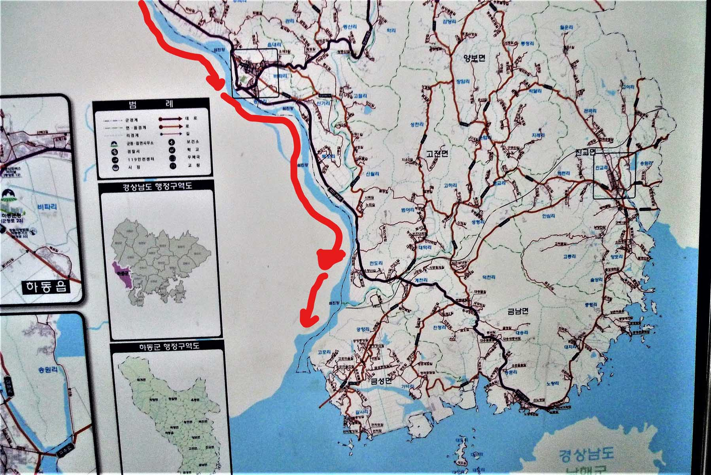

June 5-8, 2014

This river starts in the Jiri (지리산) Mountains and goes through NamWon (남원) and ends on South Coast at the town of GuemHo
located on NamHay (남해), the southern coast of Korea. On this trip we came across no large cities. The reason for this is
that there is no industrialization adjacent to this river. Therefore if you plan to canoe on this river be prepared to bring
all your supplies with you and be self-sufficient. This is one of the reasons that the water in the river is so clean. The
challenge was that there were over 12 dams on the river and for volume of water, and width of the channel, it was the
smallest of all the Korean rivers we had travelled by canoe and the one with the most dams for length travelled. I chose
this river purposely because of the memory of the very sluggish current on the NakDong (낙동강) River. We were also told that
there were rapids on this river and we looked forward to a little excitement after two rivers with few rapids.
Making preparations
The trip took place from Thursday, June 5th to Sunday June 8th 2014. I took this trip with Hobbs, one of my fellow
professors at KAIST in Daejeon. We started by visiting the canoe and checking that all the zip bags were there and that
there were no ant nests, something that we found before leaving on the NakDong (낙동강) River trip. We also put the canoe on
the roof of the car. The next day we were up early and loaded the car with the camping gear and food. It took a while to
find a suitable location for putting the canoe into the river. The starting location was above the city of Namwon (남원) and
we had to carry the gear and the canoe across a bike path to the river edge. I was a little worried as the river looked
shallow at this location and my concerns were confirmed when we started out as we had to walk the canoe for about a
kilometer before there was enough draft so we could start paddling. We also had to pass the canoe over a few stone walkways
across the river. We found that laying the mats on the stones protected the canoe and made it slide over easily.
Falling Canoe
On this trip we had to traverse a number of types of dams and each one presented a different challenge. One type was very
high, over 5 meters high, and we had to unload the canoe and lower it down the face of the dam using ropes tied to each end
of the canoe. Then we lowered the supplies down using the same ropes. Another type of dam was quite low, one meter high, and
on these we could carefully lift the canoe up and over the dam without unloading it. Then another dam we encountered was of
medium height, about 1.5 to 2 meters, and this dam often had a number of spillways in the top of the structure as shown in
the accompanying photographs. These were the most dangerous as we found out on the first day of the trip. There is a very
strong river current leading to the cut outs and we were immediately pulled into one and before we knew what was happening
we were going in the open cut in the top of the dam that became a waterfall. I was able to jump off the canoe onto the top
of the dam as the canoe went through one of these spillways. The canoe fell to the bottom of the spillway and was partially
filled with water before my partner was able to pull it away from the water falls.
Fish ladder dams
I walked around the dam and we were able to bail out the canoe but later at the campsite we found that our sleeping bags had
been partially soaked in water. This surprised us as they were stored in plastic bags but they evidently they became wet
because of the amount of water that had filled the canoe. The easiest dam to deal with was the dam that had a fish ladder up
one side of the structure. On these we slid the canoe down the fish ladder using cushions and mats. Later that afternoon we
set up our campsite along the edge of the river in a flat and grassy location that was immediately upstream from a dam. This
day we only made 35 kilometers. I am sure that this was due to the number of dams we encountered.
Stop for the night
The next day, Friday the 6th of June 2014, I was really tired but we were off by 8:30 a.m. and immediately had to deal with
one of the medium sized dams. By now we were able to pass over these without any difficulty. We found a shaded location on
the side of the river with brush leaning over the river to set up for a lunch break at noontime. Later in the day we passed
by a foot bridge over the river near a resort area with many people in the shallow river collecting fresh water shell fish,
a favorite ingredient on the Korean menu. That evening we camped along the edge of the river on a sand bar that was located
above a dam. It was becoming dark and we did not want to brave going over the dam when there was low visibility and we were
also tired from a long day on the river. We did not know where we were as there were no landmarks at the camping location
and we could not find the dam on our map. We found out in the morning that it was a beautiful location with a high mountain
behind us. Tomorrow we had to check the maps to see if we are going to make it to our destination of GeumHo.
Last day
Saturday the 7th of June was the best day of the canoe trip because the river passed through a deep valley in the mountains.
This was a really beautiful part of the river, and there were a number of rapids that made for some excitement. The canoe
was loaded by 8:30 a.m. and soon we were going over the obstacle of the dam. Luckily there was a fish ladder on the far end
of this dam. These are always a welcome sight especially at a dam like this one as it was too high to slide the canoe over
and unloading the canoe on the top of the dam and reloading it after always takes so much time. Later in the day we came to
a landmark and calculated that we had to go about 45 kilometers yet today in order to reach our destination. This was
possible but we would have to paddle hard to make it before dark. The good news was that there were no dams on this part of
the river and that meant that we probably could make it. At 1 p.m. we stopped briefly for lunch. During the next four hours
we paddled hard, reaching the lower part of the river where there was a very slow current and a strong wind was in our face
near the mouth of the Geum (금강) River along the west coast where I had been a few years before. It is amazing how much more
difficult it is to progress when the wind is against you.
Huge Bridge
We noticed the construction of a huge bridge across the river but could not find it on our maps. We finally reached our
destination, a little park just outside of the city of HaDong-Eup (하동읍) by 6:20 p.m. There we met some fishermen who were
surprised that we had come all the way from the town of NamWon(남원). We ate dinner as the light fell and soon were asleep as
we had been up late the night before and had to get up early the next day so I could have a good breakfast and be off to
find a bus back to the town where the car was located while Hobbs packed up all the gear and cleaned the canoe.
Unfortunately, we did not make it to NamHay (남해)(The South Sea), but we decided that this location with a park for camping
and bus terminal nearby was the perfect location to end this canoe trip on this beautiful river.
The bus ride back
The next morning, Sunday the 8th of June, Hobbs called a taxi and it soon arrived and took me to the bus local bus terminal.
The main worry we had was the weather. It certainly looked like rain when I left the camp site and that would make it
difficult to keep the gear dry before it was packed up for the return trip to Daejeon. It was another reason for ending the
trip on Saturday, The bus took four hours to cover the distance that took us three days. The reason the bus took so long is
that it was Sunday morning, it was a local bus that stopped at many towns along the way and I had to do one transfer on the
way to get to Namwon (남원) where the car was parked. This reminded me of the time I was telling a Korean friend about another
of the canoe trips that took three days and the bus just a few hours and he asked me “Why did you take the canoe when the
bus is so much faster!” I am sure that many others have the same question and I remember that on one of the trips on a river
in the USA, I was asked the same question. The return trip in the car from Namwon (남원) to where our trip had ended only took
2.5 hours. We later calculated that the total trip distance covered on the river was around 135 kilometers. Hobbs had loaded
all the gear in the bags and soon we had the canoe secured on the car roof. It took three and a half hours to arrive back at
KAIST in Daejeon.
Review
I would check with the Korean Coast Guard before travelling on it due to its protected status. This was a very good river
trip. The reasons are there was no pollution encountered on the river, there was a good current, there were many excellent
camp sites and also there was a road that parallels much of the length of the river. That means that you are never far from
help in case something unforeseen happens during the trip. The main negative was the large number of dams on the stretch of
the river that we travelled. Only when we approached the lower part of the river on the last day was there an absence of
dams. On the first two days of the trip we were challenged with at least five dams each day. This was more than any other
river I have travelled in South Korea. But there were no major dams of a size that we had to carry the canoe and gear a long
distance to bypass the structure. These types of dams are found on the Guem (금강) River and the Nakdong (낙동강). I would
recommend this trip for anyone who wants to travel on a beautiful river surrounded by mountains and a river containing very
clean water. I would not recommend starting far above NamWon(남원) as the river is too shallow in that location. The exception
to this is when there is high water on the river as during the monsoon season of July and August.
Many poets born along this river
One of the most beautiful stretches of this river is the area around where we passed on the second day. If I were going to
return to this river I would put in immediately above the resort area and foot bridge and start there. We enjoyed the trip
even though we were not able to make good time for the first two days due to the dams. Considering the number of dams we did
well but then I had a very strong person in Hobbs, a fellow who had done much canoeing in the central part of North America.
So think about it as a good choice of a river to travel on. During the trip we saw not one boat. Again I feel that the
rivers of Korea are an underutilized recreational resource. I am not sure but motor boats may not be allowed on the upper
parts of this river. My wife told me that it is a protected river and that many poets were born along it. I can understand
this as it is one of the most beautiful rivers that I have ever canoed and it reminded me of the West Branch of the
Susquehanna River in Pennsylvania that is also surrounded by a high mountain, the Bald Eagle Mountain.